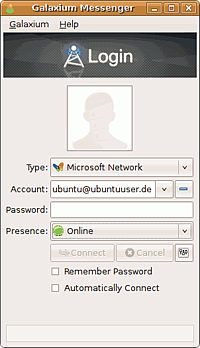
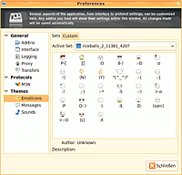

Galaxium
Archivierte Anleitung
Dieser Artikel wurde archiviert, da er - oder Teile daraus - nur noch unter einer älteren Ubuntu-Version nutzbar ist. Diese Anleitung wird vom Wiki-Team weder auf Richtigkeit überprüft noch anderweitig gepflegt. Zusätzlich wurde der Artikel für weitere Änderungen gesperrt.
Zum Verständnis dieses Artikels sind folgende Seiten hilfreich:
Galaxium  ist ein Instant Messenger, der zur Zeit nur das MSN-Protokoll unterstützt. Es wird jedoch an der Unterstützung der Protokolle XMPP (Jabber) (und damit GoogleTalk und Facebookchat), [IRC], AIM, ICQ, Y!M und GaduGadu gearbeitet. Das Projekt wurde 2003 von Adam Peck und Philippe Durand ins Leben gerufen und ist mithilfe des Mono-Toolkits für die GNOME-Umgebung realisiert worden. Das Programm gibt es derzeit nur auf Englisch, eine Übersetzung in andere Sprachen ist aber geplant.
ist ein Instant Messenger, der zur Zeit nur das MSN-Protokoll unterstützt. Es wird jedoch an der Unterstützung der Protokolle XMPP (Jabber) (und damit GoogleTalk und Facebookchat), [IRC], AIM, ICQ, Y!M und GaduGadu gearbeitet. Das Projekt wurde 2003 von Adam Peck und Philippe Durand ins Leben gerufen und ist mithilfe des Mono-Toolkits für die GNOME-Umgebung realisiert worden. Das Programm gibt es derzeit nur auf Englisch, eine Übersetzung in andere Sprachen ist aber geplant.

Merkmale¶
Kontaktlistenverwaltung
Anzeigebilder, Statusnachrichten, eigene Emoticons
Mitschnittfunktion
GStreamer-Audio-Unterstützung
Indirekte Dateiübertragungen
Gruppenchat
Nachrichtenunterstützung bei Abwesenheit
Nudge- und Wink-Funktion
Installation¶
Adresszeile zum Hinzufügen des PPAs:
ppa:galaxium/ppa
Hinweis!
Zusätzliche Fremdquellen können das System gefährden.
Ein PPA unterstützt nicht zwangsläufig alle Ubuntu-Versionen. Weitere Informationen sind der  PPA-Beschreibung des Eigentümers/Teams galaxium zu entnehmen.
PPA-Beschreibung des Eigentümers/Teams galaxium zu entnehmen.
Damit Pakete aus dem PPA genutzt werden können, müssen die Paketquellen neu eingelesen werden.
Anschließend installiert [2] man Galaxium über das Paket
galaxium (ppa)
 mit apturl
mit apturl
Paketliste zum Kopieren:
sudo apt-get install galaxium
sudo aptitude install galaxium
Benutzung/Konfiguration¶
Nach dem ersten Start erscheint der von anderen Messengern gewohnte Startbildschirm, in dem man seine Kontodaten samt Passwort eingibt, um sich anzumelden. Unter "Typ" wählt man aus, in welches Netz man sich einwählen möchte (zur Zeit ist jedoch nur das MSN-Protokoll verfügbar). Im "Konto"-Feld gibt man seinen Namen und darunter das zugehörige Passwort ein. Rechts neben der "Connect"-Schaltfläche kann man die protokollspezifischen Einstellungen ändern. Es wird empfohlen, die Option "Communicate over HTTP" zu deaktivieren, da Galaxium sich dann schneller mit den MSN-Servern verbinden kann.
Im Menüpunkt "Preferences" ( Strg + P ) hat man die Möglichkeit, die Einstellungen von Galaxium zu bearbeiten. Diese sind in drei Kategorien und mehrere Unterkategorien gegliedert. Unter "Interface" kann man die Oberfläche und das Verhalten von Galaxium verändern. Unter "Transfers" kann man die Einstellungen der Dateiübertragungen, wie z. B. das Zielverzeichnis für fertig übertragene Dateien, einstellen. Unter "Logging" kann man die Aufzeichnung der Nachrichten (Conversation Logging) aktivieren und deren Einstellungen, wie z.B. die maximale Log-Größe einstellen. Unter "Proxy" kann man die Proxy-Einstellungen verändern. Unter "Themes" kann man seine Emoticons und Message Styles verwalten und neue hinzufügen.
Themes¶
Galaxium ist mit Themes für Adium, einem Messenger für Apples Mac OS X, kompatibel. Das heißt man kann Themes für Adium auch für Galaxium benutzen. Eine Internetadresse, unter der man solche Emoticons, Sound Sets und Message Styles finden kann ist z.B. Adium - Xtras . Nachdem ein Thema heruntergeladen wurde, muss man es, falls es nicht schon im .tar.gz-Format gepackt ist, entpacken [3] und danach im .tar.gz-Format neu packen [3]. Je nachdem, ob es ein Message Style, ein Emoticon-Pack oder ein Sound Set ist, muss man das nun im .tar.gz gepackte Thema in das dazugehörige Verzeichnis verschieben.

MessageStyles: ~/.config/Galaxium/Themes/AdiumMessageStyles
Emoticons: ~/.config/Galaxium/Themes/AdiumEmoticons
SoundSets: ~/.config/Galaxium/Themes/AdiumSoundSets
Nach einem Neustart von Galaxium kann man unter "Einstellungen ( Strg + P ) -> Themes das gewünschte Theme auswählen.
Logs¶
Auch eine Log Funktion ist in Galaxium eingebaut. Diese wird in den "Einstellungen ( Strg + P ) -> General -> Logging aktiviert. Nun werden die Logs unter /~.config/Galaxium/History/MSN/eigeneemailadresse abgespeichert. Die Logs werden in Form von SQLite Datenbanken gespeichert.
Öffnen und anzeigen kann man die Logs in einem Terminal [4]. Man gibt dazu die folgenden Befehle ein.
sqlite3 name_der_datenbank.db
Dies öffnet nun den Log, den Inhalt kann man nun mit dem Befehl
SELECT * FROM items;
einsehen.
- Erstellt mit Inyoka
-
 2004 – 2017 ubuntuusers.de • Einige Rechte vorbehalten
2004 – 2017 ubuntuusers.de • Einige Rechte vorbehalten
Lizenz • Kontakt • Datenschutz • Impressum • Serverstatus -
Serverhousing gespendet von